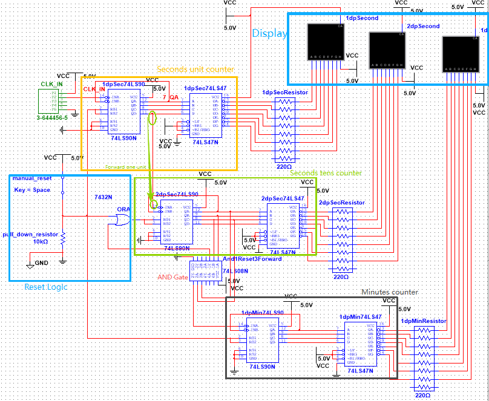
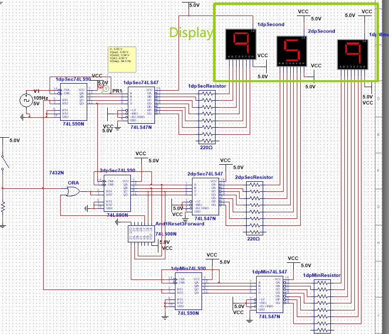
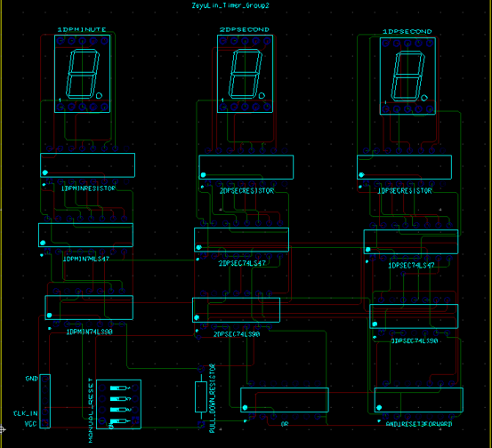
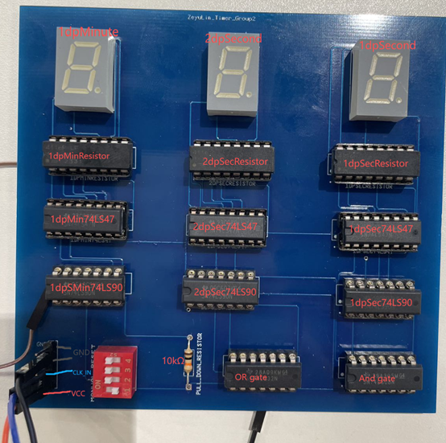

Final enclosure showing the lap counter, timer displays,
warning controls and reset controls.
Project overview
A coordinated multi-subsystem electronic product
The team developed an electronic control system for a toy
racetrack. Its front panel brought together lap counting,
race timing, warning functions and user reset controls.
As team leader and timer subsystem lead, I managed
planning and technical coordination while taking the timer
from circuit simulation through PCB assembly and testing.
Role
Team leader
Technical lead
Timer subsystem
Team
Four students
Module result
82%
Timer subsystem design
Designing a multi-digit race timer
The design combined a 555 timer clock with 74LS90 counters,
74LS47 decoder-drivers and seven-segment displays. Separate
counting stages produced the timer digits and reset behaviour.

Annotated timer architecture showing the counter, reset and display stages.

Multisim verification with all three timer digits operating.
PCB implementation
From schematic to soldered timer PCB
After functional checks in Multisim and on breadboard, I
produced the timer PCB layout in Ultiboard, assembled the
components and inspected the finished board before testing.

Final Ultiboard layout for the timer subsystem.

Assembled timer PCB with counters, decoders and displays.
Testing and troubleshooting
Verifying clock and counter stages
I tested the timer progressively instead of assembling the
complete circuit at once. Clock generation, individual digit
counting and display decoding were checked as separate stages.
An oscilloscope, logic probe and multimeter helped isolate
wiring, signal and component faults before the design moved
from breadboard to PCB.
Two-digit counter stage checked before PCB production.
Coordination and outcome
Leading design and delivery
Alongside the timer work, I coordinated the Gantt chart,
block diagram, team reporting and technical integration.
I also produced the enclosure design for laser cutting.
The team completed the subsystem designs, prototype
demonstrations and final group report. My timer PCB and
breadboard prototype both operated successfully.